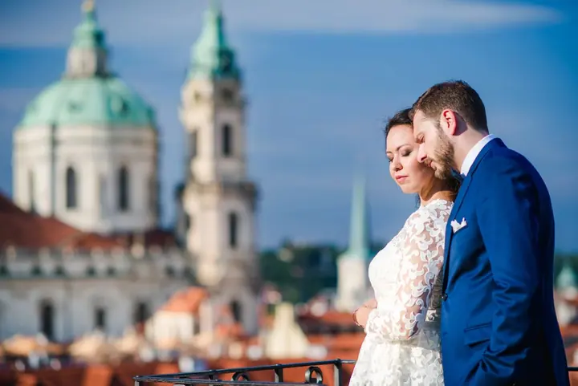
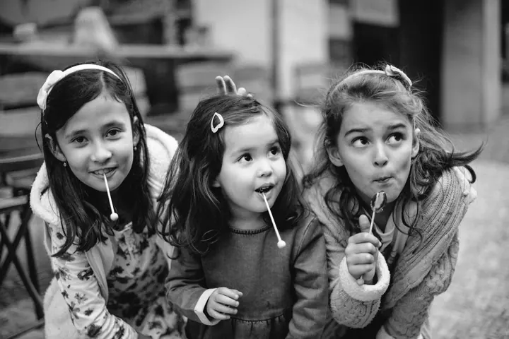

jedna
Svatby
Fotím svatby v Praze i jinde v Evropě, od obřadu po procházku historickými uličkami. Chci, aby z fotek byl cítit váš příběh a vy sami, ne strojené pózy.

Svatební a rodinná fotografka · Praha, Evropa, kdekoli ve světě

Jmenuji se Raifa Slota a jsem svatební fotografka z Prahy. Fotím svatby, zásnuby a páry v historických uličkách, ale i rodiny s dětmi. Za vámi ráda přijedu kamkoli po světě.
Více o mně
Co fotím
jedna
Fotím svatby v Praze i jinde v Evropě, od obřadu po procházku historickými uličkami. Chci, aby z fotek byl cítit váš příběh a vy sami, ne strojené pózy.
dvě
Předsvatební focení, zásnuby nebo žádost o ruku v ulicích staré Prahy. Vyrazíme za svítání nebo po západu slunce, kdy je město klidnější a světlo jemné.
tři
Procházka po Praze s dětmi, smích, lízátka a obyčejné chvíle, které rychle utečou. Rodinné focení začíná od 3 000 Kč.
Portrétní focení v ulicích Prahy pro každého, kdo chce mít pěkné fotky sám se sebou. Poradím s oblečením i místem, aby fotky seděly k vaší povaze.

Praha je nejtišší za svítání.


Za objektivem
Jmenuji se Raifa a fotím v Praze, ale za svatbami a focením jezdím po celé Evropě i dál. Lidé jsou pro mě hlavní inspirací. Nejvíc mě baví, když se před objektivem přestanete hlídat a jste prostě sami sebou.
Na fotkách chci vyprávět váš příběh. Ať jde o svatbu, žádost o ruku nebo procházku s dětmi, hledám skutečné chvíle mezi vámi a k nim místa, která k vám sedí: Malou Stranu, nábřeží u Karlova mostu nebo pestrobarevnou Lennonovu zeď.
Ráda vám poradím, co si vzít na sebe, kdy vyrazit a kam. Prahu mám nejradši za svítání, kdy jsou ulice ještě prázdné, a večer po západu slunce, kdy má světlo zvláštní kouzlo.
Raifa
Pošlete mi pár řádků o vaší svatbě nebo focení, které plánujete. Ráda se dozvím, co si představujete.
Vybereme den, čas a místa v Praze. Nejlepší světlo bývá za svítání a po západu slunce a poradím vám i s oblečením.
Sejdeme se v domluvený čas a vyrazíme. Podle délky focení stihneme jedno až pět míst.
Upravené fotky vám u kratšího focení pošlu přes internet. U focení od 4 hodin vám poštou přijde USB s fotkami a 14 tištěných fotografií.
Portfolio
Otázky
Focení můžeme přesunout na jiný den, který vyhovuje nám oběma. Svatbu samozřejmě přesunout nejde, ale s deštníkem a prací se světlem se dají vytvořit krásné záběry s odrazy a texturami.
Za svítání, kdy jsou historické uličky ještě bez davů a světlo je jemné. Nebo kolem západu slunce, kdy zlatá hodinka dodá fotkám zvláštní kouzlo.
Něco pohodlného, co k vám sedí. Dámám doporučuji vlnité šaty nebo sukni v jemných pastelových barvách, pánům jednoduchost. Vyhněte se kostkovaným a výrazným vzorům a ladit barvy mezi sebou se u párů vždycky vyplatí.
Za hodinu 1–2 místa, za dvě hodiny 3, za tři hodiny 4 a za čtyři hodiny 4–5 míst. Upravené fotky posílám přes internet, u focení od 4 hodin poštou na USB i se 14 tištěnými fotografiemi. RAW soubory nepředávám.